Oil & Acrylic
 Obsteller
Obsteller
 Fische 1
Fische 1
 Libellen
Libellen
 Rot
Rot
 Türkis
Türkis
 Blätter
Blätter
 Grün in Grün
Grün in Grün
 Köln bei Nacht
Köln bei Nacht
 Wald und Wiese
Wald und Wiese
 Aschaffenburg
Aschaffenburg
 Fische 2
Fische 2
 Blumenabstraktion
Blumenabstraktion
 Mönch in Laos
Mönch in Laos
 Herde in Myanmar
Herde in Myanmar
 Lavendelfelder, Provence
Lavendelfelder, Provence
 Wasserfall
Wasserfall
 Toskana
Toskana
 Wasserspiegelungen klein
Wasserspiegelungen klein
 Tulpenmeer
Tulpenmeer
 Traumlandschaft
Traumlandschaft
 Zitronen mit Paprika
Zitronen mit Paprika
 Himmel
Himmel
 Löwen
Löwen
 Gelbe Seerosen
Gelbe Seerosen
 Blätter
Blätter
 Exotische Blumen
Exotische Blumen
 Wüstenlandschaft
Wüstenlandschaft
 Madame
Madame
 Jazz Dancer
Jazz Dancer
 Wasserspiegelungen groß
Wasserspiegelungen groß
 Flamenco Tänzerin 2
Flamenco Tänzerin 2
 Model
Model
 Tibetischer Junge
Tibetischer Junge
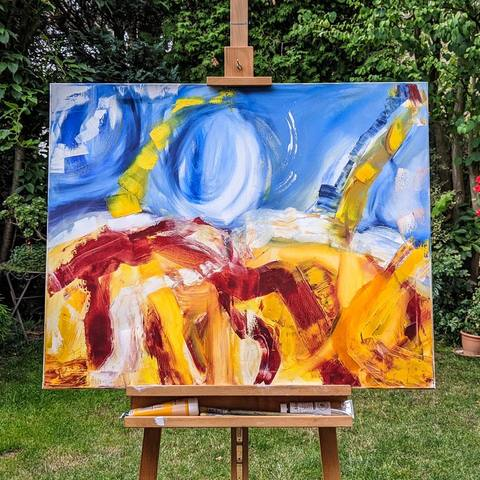
Abstrakt 2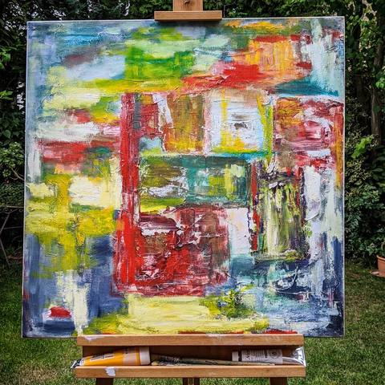
Abstrakt 3 Wildblumen
Wildblumen
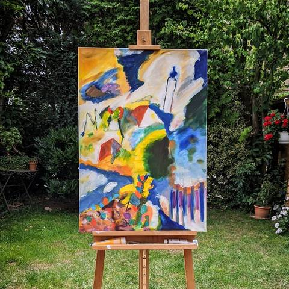
Abstrakt nach Kandinsky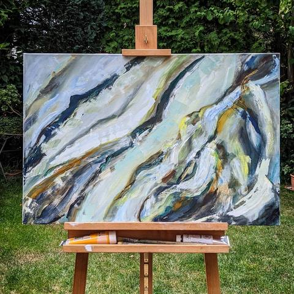
Abstrakt 4 Grautöne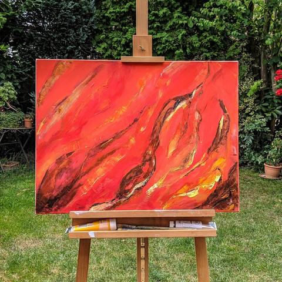
Abstrakt 5 Rottöne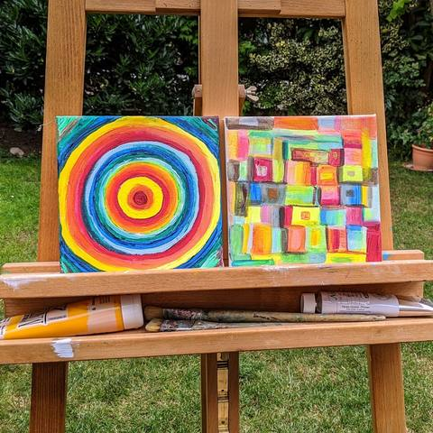
Circle & Squares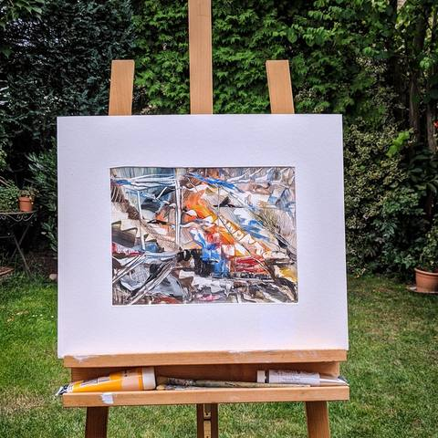
Abstrakt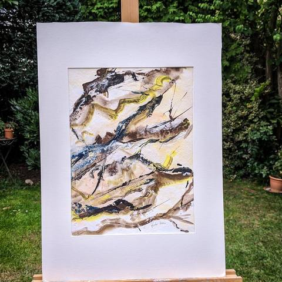
Äste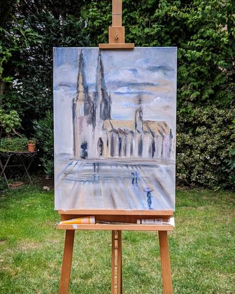
Kölner Dom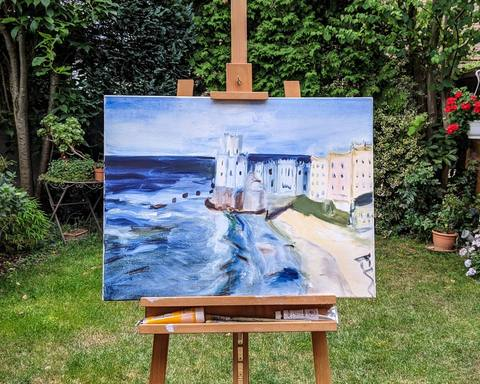
Stadt am Meer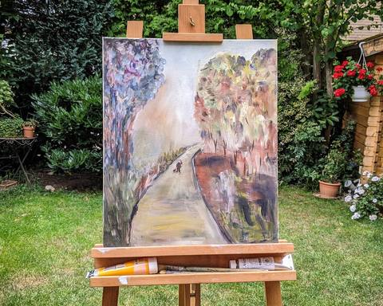
Herbst Landschaft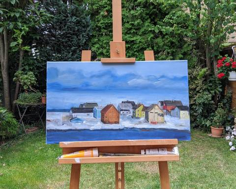
Häuser in Norwegen Ballerina in New York
Ballerina in New York
 Spielende Kinder
Spielende Kinder
 Friends
Friends
 Paprika
Paprika
 Äpfel mit Nüssen
Äpfel mit Nüssen
 Papayas
Papayas
 Blumenstrauß
Blumenstrauß
 Weiße Seerosen
Weiße Seerosen
 Rote Rose
Rote Rose
 Katze hinter Blumen
Katze hinter Blumen
 Katzen
Katzen
 Der Bieber und seine Freunde
Der Bieber und seine Freunde
 Elefant
Elefant
 Delphin
Delphin
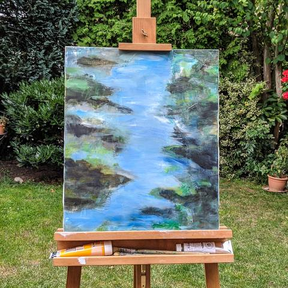
Bachlauf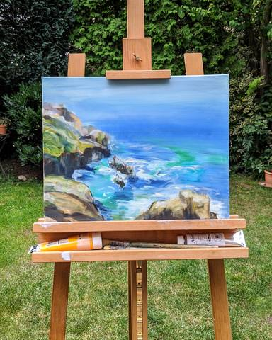
Küste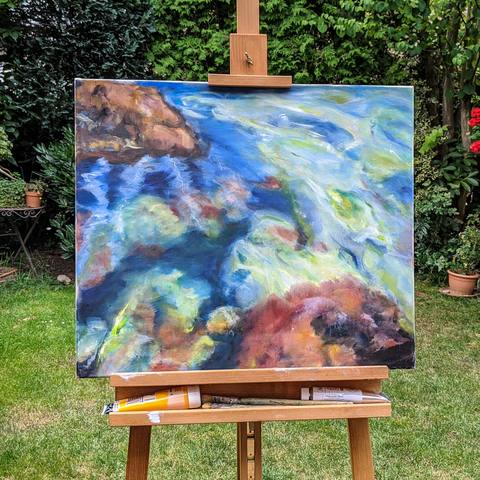
Das Riff Blaues Dorf
Blaues Dorf
 Patchwork Blumen
Patchwork Blumen
 Blauer Mann
Blauer Mann